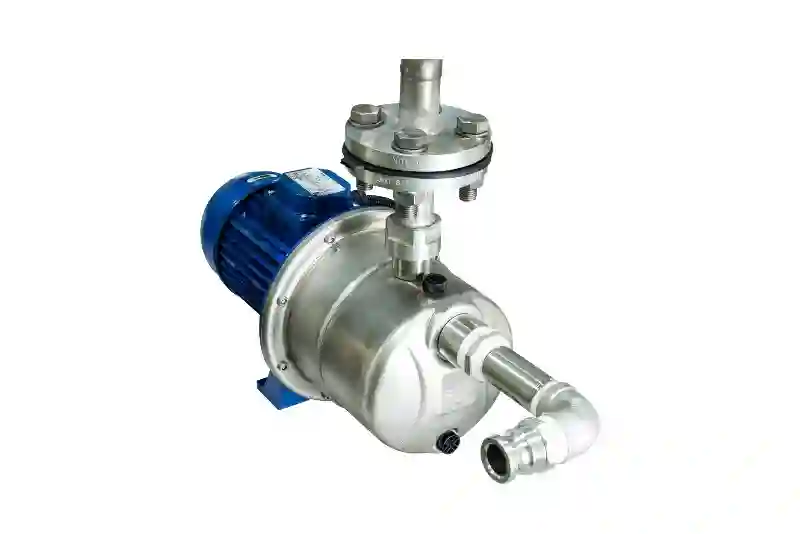
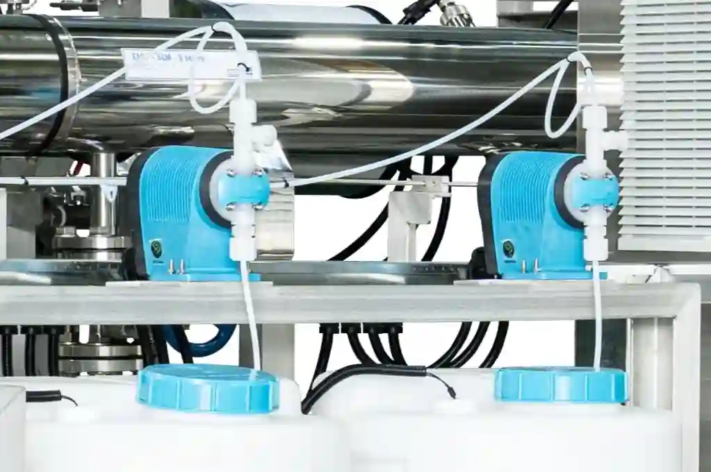
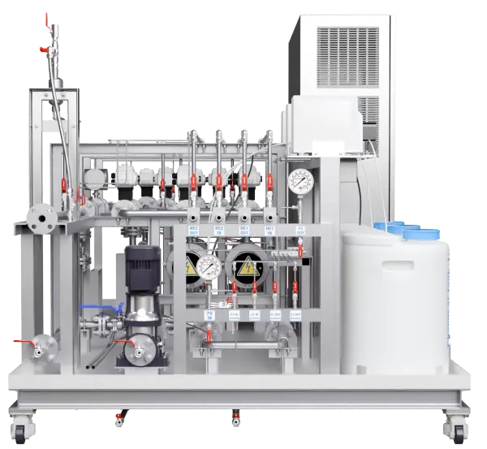

| Pilot Equipment General Specifications |
|---|
| Lamp Type | Medium Pressure / Low Pressure |
| Size (mm) | 1,500 (W) x 2,750 (L) x 1,655 (H) |
| Weight | 1 ton |
| Chamber Material | STS 316 |
| Electrical Input | 220V 3Phase |
| Operating Temperature | LP 5-45°C, MP 5-65°C in Chamber |
| Sampling Parts | 4 Installed (Inlet, Outlet for both LP / MP) |
| Size for Inlet, Outlet, Main Pipes | 25A |
Personal Information Processing Policy: Neotech UV collects only the minimum necessary information required to process corporate consultations and deliver professional service inquiries.
Data Items Collected: Inquiry Type, Name, Mobile Phone Number, Email Address, and Message Details.
Purpose of Collection: To evaluate and respond to customer inquiries, facilitate engineering consultation, and maintain a historical reference for ongoing client communication.
Retention Period: All submitted information is securely retained for a period of 2 years following receipt, after which it is permanently deleted.
Cookie Policy: Neotech UV does not collect, store, or track cookie data. Our website is designed to be a static information portal. It is a private browsing experience without user tracking or sessions.